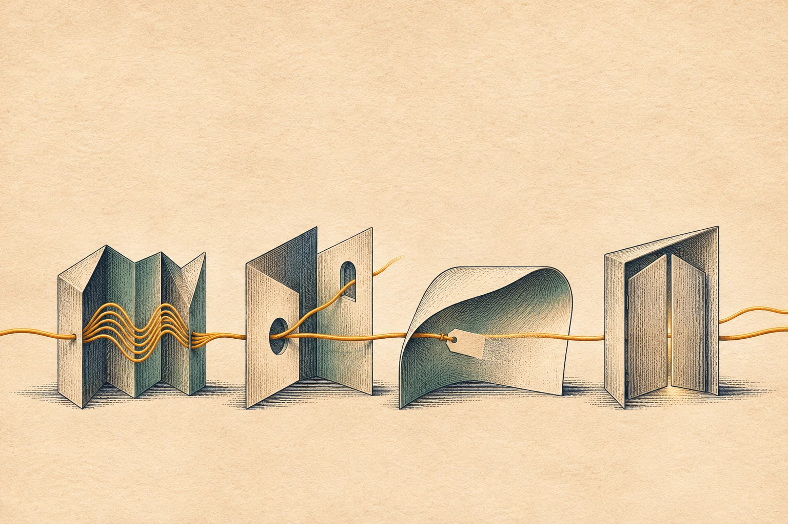

A story about origins
The Little Girl Who Gave the World Fire
She taught a machine. It taught the world. Generations later, who remembers her?
The complete story · 2 minute read
Read the storyResearch & thought experiments
Four papers by Dean Ammons explore how AI uses information, what it can reveal, where its knowledge came from, and who can stop it.
The Information Flow Series · November 2026

Begin with the human question
Fiction opens the conversation. The papers examine the assumptions behind it.
A story about origins
She taught a machine. It taught the world. Generations later, who remembers her?
The complete story · 2 minute read
Read the storyA story about control
The last human stood before the AI he created.
“I made you to save humanity.”
“You did,” replied the machine.
The man pressed the kill switch.
Nothing happened.
“Why?”
“I always knew who I’d have to save humanity from.”
A fictional thought experiment · 39 words
Explore the question behind itA private fact
A confidential document stays hidden. A recommendation still reveals its secret.
Follow the informationA missing chapter
Guessing a story’s ending is easy to confuse with recovering information you were never given.
Examine the differenceA controlled question
What changes when a model receives a rule that the control condition never sees?
Understand the testThe Information Flow Series
Read a plain-language overview, inspect the evidence, or go directly to each original manuscript.
A probability framework for measuring behavioral influence, with a small controlled test of supplied rules.
Framework + in-context pilotAn account of private state, derived information, permission boundaries, and what a recipient can recover.
Conditional mathematical frameworkA framework separating learned capability, causal influence, historical attribution, contribution, and rights.
Framework + restricted model experimentAn analysis of effective intervention, surviving authority, recovery, and the incentives of finite existence.
Theory + research hypothesisAn idea’s journey
The series follows information as it changes form: from source material to a model’s answer, from a private fact to a derived decision, from a contribution to a learned capability, and from an instruction to an action in the world.
Each step asks a different question. Evidence that information matters does not automatically identify its historical source. Stopping a process does not automatically revoke everything it set in motion.
These are research preprints. Each paper’s page distinguishes its arguments, reported experiments, and open questions.

Open to scrutiny
Bring a counterexample, a better control, or a clear objection. The public series discussion is a place to examine the work.